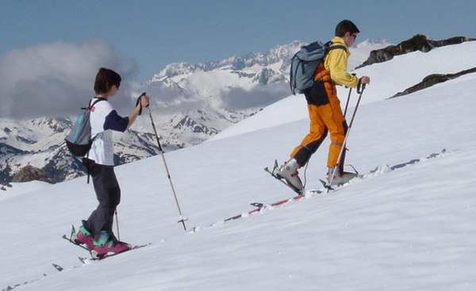
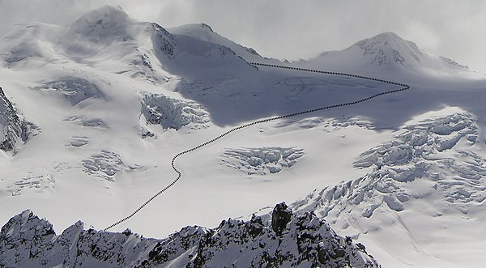
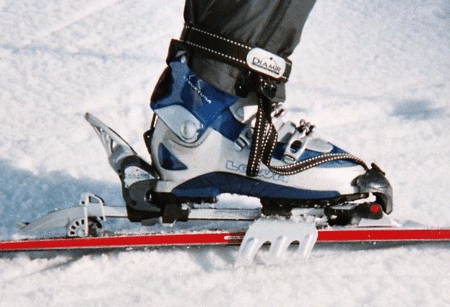

Ski touring is skiing in the backcountry on unmarked or unpatrolled areas. Touring is typically done off-piste and outside of ski resorts, and may extend over a period of more than one day. It is similar to backcountry skiing but excludes the use of a ski lift or transport.
Ski touring combines elements of Nordic and alpine skiing and embraces such sub-disciplines as Telemark and randonnée. A defining characteristic is that the skier's heels are "free" – i.e. not bound to the skis – in order to allow a natural gliding motion while traversing and ascending terrain which may range from perfectly flat to extremely steep.
Ski touring has been adopted by skiers seeking new snow, by alpinists, and by those wishing to avoid the high costs of traditional alpine skiing at resorts. Touring requires independent navigation skills and may involve route-finding through potential avalanche terrain. It has parallels with hiking and wilderness backpacking. Ski mountaineering is a form of ski touring which variously combines the sports of Telemark, alpine, and backcountry skiing with that of mountaineering.
Among the pioneers of ski touring is John "Snowshoe" Thompson, perhaps the earliest modern ski mountaineer and a prolific traveler who used skis to deliver the mail at least twice a month over the steep eastern scarp of the Sierra Nevada to remote California mining camps and settlements. His deliveries began in 1855 and continued for at least 20 years.[2] Thompson's route of 90 miles (140 km) took three days in and 48 hours back out with a pack that eventually exceeded 100 pounds (45 kg) of mail.
Cecil Slingsby, one of the earliest European practitioners, crossed the 1,550-metre-high (5,090 ft) Keiser Pass in Norway on skis in 1880. Other pioneers include Adolfo Kind, Arnold Lunn, Ottorino Mezzalama, Patrick Vallençant, and Kilian Jornet Burgada.
Ski touring involves both uphill and downhill travel without needing to remove skis. Various terms have emerged to refer to how the terrain is accessed and how close it is to services.
Various devices can be used to make ascending easier. "Fish scale" pattern friction aids embossed in the center section of the bottoms of the skis or sticky ski wax in the center pocket are used in lower-angle or rolling terrain. Climbing skins are used when fish scales or ski wax fail to provide sufficient grip for skiing steeply uphill. Ski crampons may be attached when conditions are particularly icy or the grade too steep for skins.
